Options
Common
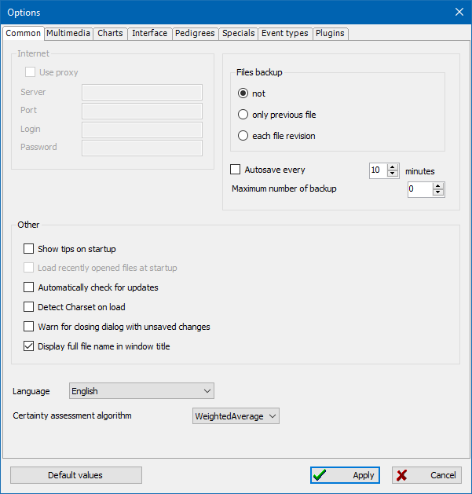
Internet
- Use proxy
-
Check this if using a proxy to access the Internet for Maps.
This option is currently blocked and not used.
- Server, Port, Login, Password
- Proxy server connection parameters.
Files backup
- Controls if backups of the current database are performed.
-
- not - If selected then no backups of the database is performed.
- only previous file - If selected then only a single backup is made each time the database is saved (`*.ged.bak`).
- each file revision - If selected then every time the database is saved a new backup is created (to folder `__history`).
- Autosave every N minutes
-
If checked then the database is automatically saved every N minutes
(only if the file has been modified).
- Maximum number of backup N
- This option defines the number of backup revisions stored in the `__history` folder. If exceeded, old files are deleted.
Other
- Show tips on startup
-
When this option is enabled, useful tips and recommendations
for working in the program will be shown when the program starts.
Also, after loading any database, reminders about upcoming birthdays and anniversaries will be shown.
- Load recently opened files at startup
-
If checked then the last file used is automatically opened.
Currently, after changing the program architecture, this option is disabled.
- Automatically check for updates
-
If checked then GEDKeeper will check to see if a new version is available.
If found, then a message is displayed.
- Detect Charset on load
-
This option is useful if files from third-party sources with non-standard encodings can be loaded.
The option will allow you to determine the encoding and load files with the correct text.
- Warn for closing dialog with unsaved changes
-
Useful to prevent loss of data entered in any editing dialog.
The user will be warned if there are changes and the dialog is closed without saving.
- Display full file name in window title
- Enables display of the full name (including path) of the current file in the title of the main window.
- Language
-
Controls which language will be used in the interface.
Restarting is not required, but you must click "Apply" for this to take effect.
- Certainty assessment algorithm
-
The option defines the algorithm by which the data certainty index
is calculated in tree charts and other program modules.
Multimedia
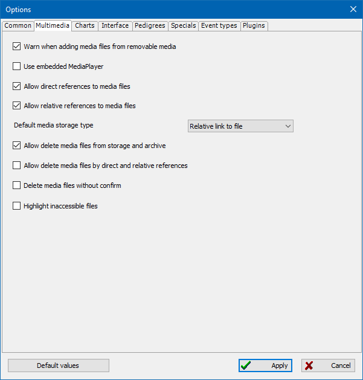
- Warn when adding media files from removable media
-
If checked then a warning will be shown if a media file
is on removable media such as a CD, DVD, or USB stick.
- Use embedded MediaPlayer
-
If checked then GEDKeeper's media player will be used.
If unchecked, then the system default viewer for media is used.
- Allow direct references to media files
-
If checked then media files are not copied to the subdirectory where the database is kept.
Instead a direct reference to where the media is located is used.
Note: this could make transferring your database to another location more difficult.
- Allow relative references to media files
- If this option is enabled, the program will allow you to add media files with relative paths.
- Default media storage type
-
Defines the storage type of media files that will be offered by default in the dialog for adding
multimedia records.
- Allow delete media files from storage and archive
- If this option is enabled, the program will allow you to delete media files from storage and archive.
- Allow delete media files by direct and relative references
-
If the option is enabled, the program will allow you to delete media files by direct (absolute)
and relative paths. Warning: such actions are associated with the risk of data loss,
check for duplicates of important files!
- Delete media files without confirm
-
If this option is enabled, media files will be deleted without additional confirmation.
Warning: such actions are associated with the risk of data loss!
- Highlight inaccessible files
-
When this option is enabled, the main list of multimedia records will be checked for the presence/availability
of the corresponding files and highlighted in light red if the file is not available.
Charts
Trees
There are two setting groups for family tree generation: how persons are represented in the tree
and how the tree appears on a render target.
Show individuals in tree
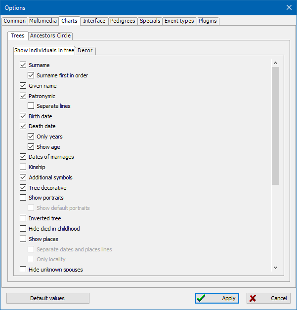
Here you define what data you will see in the tree:
last name, first name and surname, birthday and obit, and what part of dates.
- Surname
- If checked then the surname, if available, will be rendered.
- Surname first in order
-
Determines the order in which parts of the name will be displayed in the person card:
"Surname First name Patronymic" or "First name Patronymic Surname".
- Given name
- If checked then the first name, if available, will be rendered.
- Patronymic
- If checked then the patronymic, if available, will be rendered.
- Separate lines
- If checked then the first name, and patronymic if any, are rendered on separate lines. Otherwise they are on a single line separated by a space.
- Birth date
- If checked then the date of birth, if available, will be rendered.
- Death date
- If checked then the date of death, if available, will be rendered. If checked then you can choose to only show the years.
- Only years
- If the option is disabled, dates are displayed in full, otherwise - only the year, without the day and month.
- Show age
- The option enables display of the estimated age according to the date of birth and date of death (if any).
- Date of marriages
- If checked then any dates of marriage will be rendered.
- Kinship
- When this option is on, every person has a visible relation degree—which is calculated on each tree rebuild relative to the central person in the tree.
- Additional symbols
-
This renders special symbols for some categories of people.
There are special icons for veterans of the World War II, died, veterans of Labor, cavalier of Cross of St. George, and repressed.
These categories are defined in the user-defined reference section in the person editor.
- Tree decorative
- Controls some additional graphical elements and shadows.
- Show portraits
- If checked then the person's portrait, if available, is shown. If checked, you can also choose to use a default portrait.
- Show default portraits
-
If the option is enabled and a certain person does not have a specified portrait,
then a template image will be displayed, indicating a man or a woman.
- Inverted tree
- If checked then the top-level of the tree is located at the bottom.
- Hide died in childhood
-
This option becomes helpful when you handle several sources,
because it can reduce the number of visible persons and make your task much simpler.
- Show places
- If checked, and one or more places were provided, then they are rendered.
- Separate dates and places lines
- If the option is disabled, dates of birth/death and corresponding places are displayed in one line.
- Only locality
-
The enabled option reduces the location displayed in the person's card to only the locality,
hiding the other parts.
Note: location strings must be specified in the standard format - separator "," (comma).
- Hide unknown spouses
-
If checked, and the spouse is not known, then the spouse placeholder is not rendered.
- Check tree size allowed
-
If checked, then the maximum number of persons in the tree and the maximum image resolution are checked.
This is usually unchecked as GEDKeeper no longer has any such restrictions.
- Dotted lines of adopted children
-
If this option is enabled and there are adopted persons in the tree,
the connecting lines from this person to others will be dotted
(see Personal records).
- Dotted lines of common law spouses
-
If this option is enabled, divorced spouses or partners in unregistered marriages
will be connected by dotted connecting lines.
- Bold font of names
- If this option is enabled, the names of people in cards will be displayed in bold.
- Minimizing width
-
A special adjustment is made to save space on the tree image,
and the persons are displayed less sparsely.
- Show special notes
- (см. Сноски).
- Same cards width
-
This option enables a mode in which all person cards in the tree receive the same width,
equal to the width of the largest card in the tree.
- Full name on one line
-
This option allows speakers of Eastern hieroglyphic languages to display all parts of a name on one short line,
instead of spreading the hieroglyphs across different lines.
- Date designations
- The option includes the traditional notations of birth dates "*" and death dates "+", as well as brackets around ("[" and "]").
- Mourning edges
- This option allows you to turn off the "mourning" frame - a wide black frame around dead people.
- Use additional dates
- This option allows you to display baptism or burial dates instead of missing dates of birth or death.
- Use inline images in SVG
-
The option determines the method of saving portrait thumbnails when saving tree images to an SVG file.
If the option is enabled, the portraits will be encoded in a special way and embedded in the SVG file;
if the option is not enabled, the portraits will be saved as separate files in a folder with the same name as the SVG file.
- Extended tree
-
The option enables the display in tree diagrams (see Family Trees)
not only of the branches of the ancestors and descendants of the central person,
but also of the branches of the ancestors of the spouses of the central person.
Decor
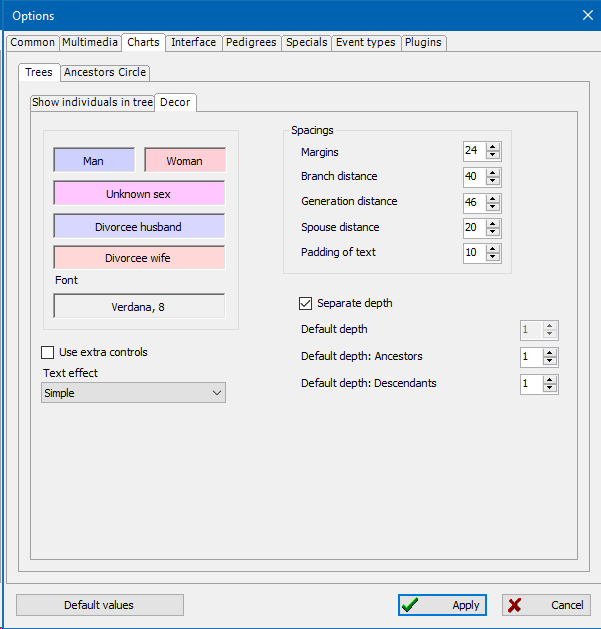
This setting group defines colors and the main font used in tree rendering.
- Man
- Choosing a color for men's cards.
- Woman
- Choosing a color for women's cards.
- Unknown sex
- Choosing a color for cards of persons without specified gender.
- Divorcee husband
- A divorced husband (man) will be shown with this color.
- Divorcee wife
- If the person is a divorced wife (woman) then this color will be used.
- Font
-
Controls which font is used for generated charts.
Click here and a list of all available fonts on your system is shown.
- Use extra controls
-
The option includes the ability to manage tree diagrams (see Family Trees)
using additional pop-up controls.
Spacings
Controls a set of spacings on the charts in points (dots).
- Margins
- Specifies the margins on each side of the chart.
- Branch distance
-
The horizontal distance between person cards belonging to different descendant branches.
Default value, may be wider if the diagramming requires
placing branches further apart.
- Generations distance
- The vertical distance between each generation.
- Spouse distance
- The horizontal spacing between the spouses.
- Padding of text
- Margins from the edges of the person card to the text.
Depth of generations
- Separate depth
-
If this option is disabled, the default generations depth for both ancestors and descendants
will be enabled when the diagram is opened.
- Default depth
-
This option specifies the default depth in both ancestor and descendant generations
when the user opens the tree diagram. A value of -1 means unlimited depth.
- Default depth: Ancestors
- This option determines the default depth in ancestor generations when the user opens the tree diagram.
- Default depth: Descendants
- This option determines the default depth in descendant generations when the user opens the tree diagram.
Ancestors Circle
Controls visual characteristics of the Ancestors Circle chart.
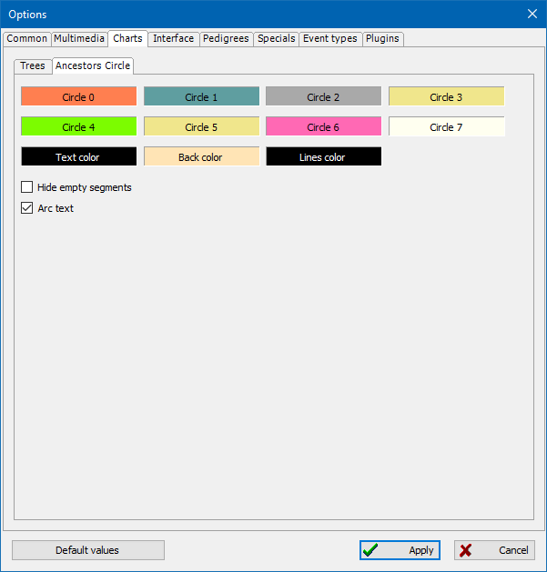
- Circles from 0 to 7
- Controls the color for N circle.
- Text color
- Specifies the color of the text. Be sure it is not the same as "Back color".
- Back color
- Specifies the background color for the text. Be sure it is not the same as "Text color".
- Lines color
- Sets the color for the lines between circle segments.
- Hide empty segments
- Segments without data are not rendered.
- Arc text
-
If checked then the text is shown in an arc fashion to follow the curvature of a segment.
Otherwise text is drawn completely horizontal or vertical.
Interface
All lists
Controls characteristics for every list that is shown.
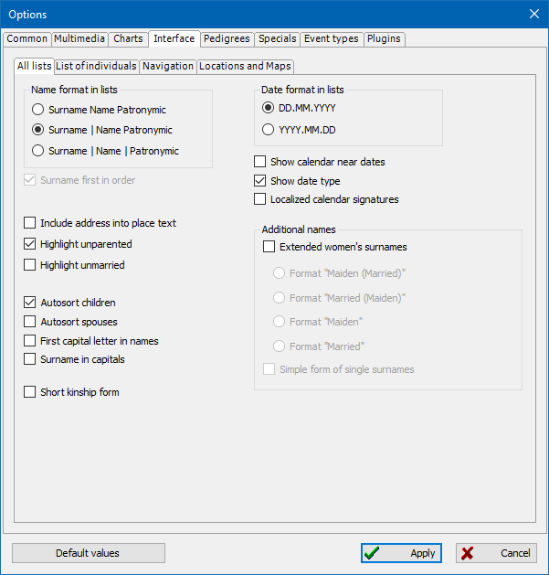
Name format in lists
- Name format in lists
-
The option determines the order in which names are displayed in the columns of the list of persons:
-
Surname_Name_Patronymic
The surname, first name, and patronymic (or middle name) if present, are displayed in one common column.
-
Surname; Name_Patronymic
The surname is displayed in a separate column, and the first and patronymic are displayed in a common column.
-
Surname; Name; Patronymic
The surname, name, and patronymic are displayed in separate columns.
- Surname first on order
-
The option determines the order in which parts of the name are displayed in the list columns:
Surname-First Name-Patronymic or First Name-Patronymic-Surname.
Dates
- Date formats in lists: dd.mm.yyyy, yyyy.mm.dd
-
Date formats
-
DD.MM.YYYY
Dates will be shown in the following order: day, month, then year. Each segment is separated by a period.
-
YYYY.MM.DD
Dates will be shown in the following order: year, month, then day. Each segment is separated by a period.
- Show calendar near dates
- Displays a calendar marker for the type of date being used: Gregorian, Jewish, or Julian.
- Show date type
- Displays a symbol next to the date to indicate if it is relative, calculated (or evaluated), before, after, or a range.
- Localized calendar signatures
-
If this option is not enabled, the date calendar (if the option above is enabled) is indicated by one letter in Latin,
otherwise, national symbols are displayed in the selected interface language.
Additional names
- Extended women's surnames
-
The GEDCOM standard for storing genealogical information does not define a way to differentiate
between maiden and married names for women. The GEDKeeper program
adds a method for entering married names to the standard, but only if this option is enabled.
In this case, a regular, always available surname is considered a maiden name.
It is assumed that if a woman had several married surnames,
then they will be entered in the corresponding field in a row, separated by commas.
- Format: Maiden surname (Married surname), Married surname (Maiden surname), Maiden surname, Married surname
-
Controls how women's names are displayed if they are married,
if the option to support extended women's surnames is enabled.
As an example, we will use the name Jane whose maiden name is Smith and is now Johnson.
-
Format "Maiden (Married)"
Example: Jane Smith (Johnson)
-
Format "Married (Maiden)"
Example: Jane Johnson (Smith)
-
Format "Maiden"
Example: Jane Smith
-
Format "Married"
Example: Jane Johnson
- Simple form of single surnames
-
If there is only a married name, and the format requires outputting only maiden names,
the existing surname will be used. Otherwise, nothing.
Прочее
- Include address into place text
- If checked then the address of a place is shown (if available).
- Highlight unparented
-
Highlighting persons with no parents or family improves navigation through the list.
The following color scheme is applied: a white background is used for persons with family and parents,
flaxen background for persons without family, and light red for persons without parents.
Background colors do not prevent getting information.
- Highlight unmarried
-
If checked then persons who are not married are highlighted.
- Autosort children
- If checked then when children are shown they will be automatically sorted by birth date.
- Autosort spouses
- If checked then spouses are automatically sorted by marriage date.
- First capital letter in names
-
This option enables automatic formatting of first and last names in the Person and Personal Name
editing dialogs to a capital first and lowercase following letters
(see Personal Records and Personal Names).
- Surname in capitals
-
This option enables automatic formatting of surnames in the Person and Personal Name editing dialogs
to an all-caps representation (see Personal Records
and Personal Names).
- Short kinship form
-
This option enables the reduction of certain degrees of kinship "great-great-great...-"
to a single indication of "great" and a number of repetitions
(see Family Trees and Kinship Calculator).
List of individuals
Controls what person characteristics are shown and the order in which they are shown.
To change the order, simply selected a characteristic and use the up and down arrows.
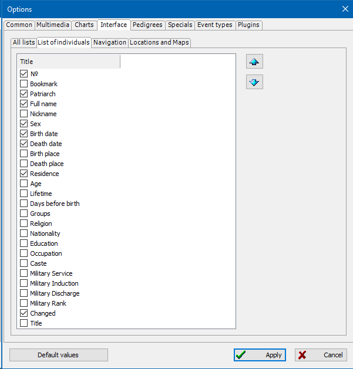
Navigation
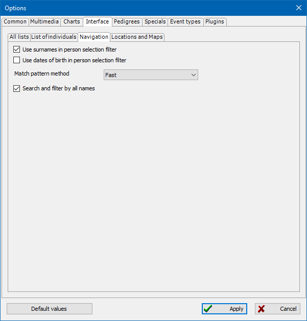
- Use surnames in person selection filter
-
This option enables automatic substitution of the child's surname in the select/add dialog filter of the father or mother,
as well as substitution of the parent's surname in the select/add dialog filter of the child.
The substitution of the surname can be adjusted manually.
- Use dates of birth in person selection filter
-
This option enables the use of the child's birth date in the Select/Add father or mother dialog,
and the use of the parent's birth date in the Select/Add child dialog
(only persons born before the child's birth date or born after the parent's birth date are displayed).
To avoid false positives, the acceptable age of childbearing is not taken into account.
The absence of a birth date for any persons is considered an acceptable option.
- Match pattern method (RegEx, FastIgnoreCase, Fast)
-
This option defines the algorithm that will be used for filtering and searching.
RegEx - reliable, but the slowest of the three (with a database of over 100-200 thousand people, small delays are possible).
FastIgnoreCase - a fast filtering algorithm, there are restrictions on supported mask combinations, compares with ignoring the character case.
Fast - the fastest filtering algorithm, there are restrictions on supported mask combinations, takes into account the character case.
- Search and filter by all names
-
If there is more than one name in personal records - with the option enabled,
the search and filtering will be performed by all names.
If the option is disabled - only by the first names.
Locations and Maps
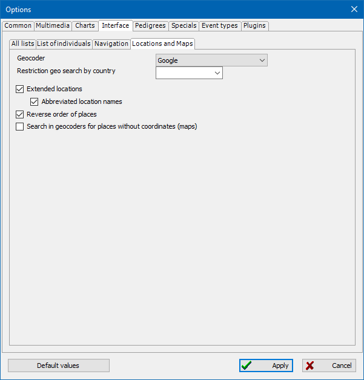
- Geocoder
-
The option specifies the service-provider that will be used to search for geographic coordinates of places by name
(see Geographical place records and Maps).
- Restriction geo search by country
-
The option is used to limit the results of a geographic search for places
in a specific locale (language/country).
- Extended locations
-
All location processing and substitution operations involving place records
will take into account the possible presence of historical information about the binding of place names
to dates, the possible presence of hierarchical relationships between places
(see Geographic Place Records).
- Abbreviated location names
-
If there is an abbreviated name for a location records, that will be used first.
- Reverse order of places (from small to large)
-
When forming a long historical name of a place according to the existing hierarchy of locations,
the reverse order of listing will be used - from smaller to larger.
If the option is disabled, the direct order will be used - from larger to smaller.
- Search in geocoders for places without coordinates (maps)
-
When loading a list of places with reference to people and events in maps,
if the place does not have specified coordinates,
with this option enabled, the coordinates will be automatically requested via the geocoder
(this greatly slows down the process of preparing maps).
Pedigrees
Here are the options for generating pedigrees.
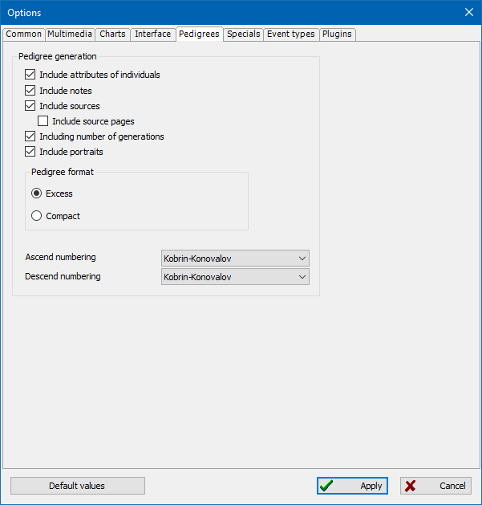
- Include attributes of individuals
- Checks if a person's life facts/attributes (not events) will be included in the pedigree.
- Include notes
- Checks if text notes from a person's biography will be included in the pedigree.
- Includes sources
-
Determines if the pedigree includes source numbers that reference a person—
there is a source list at the bottom of the pedigree.
- Include source pages
-
Specifies whether to output page numbers from used sources.
- Including number of generations
-
Sets whether to display additional subheadings of the type "Generation 1", "Generation 2", and so forth.
Otherwise the generation's texts follow without a visual breakdown.
- Include portraits
-
The generated pedigrees will include portraits of individuals.
- Pedigree format (Excess / Compact)
-
These control the level of details for a person description printed in the pedigree.
Usually, you would use the Compact format, because the Excess one may contain too much unnecessary information.
- Ascend and descend numbering
-
These options allow you to specify the type of numbering of persons to facilitate searching for relationships between them in the text.
Different countries and regions have their own traditional systems.
GEDKeeper uses the Kobrin-Konovalov and Sosa-Stradonitz systems for numbering ascending pedigrees.
For descending pedigrees, the Kobrin-Konovalov and d'Aboville systems.
Specials
Rarely used, experimental, or highly specialized options.
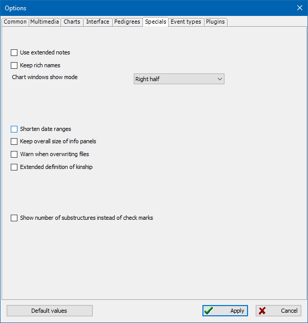
- Use extended notes
-
The option enables the ability to enter notes in the program,
which have additional formatting capabilities (non-standard format for storing design, BB-markup).
- Keep rich names (advanced users only)
-
This option enables the mode in which the maximum redundant structures of personal names
(with duplication of information) are written to the database file when saving.
This makes the functionally same file larger in volume.
- Chart windows show mode (Default, Left half, Right half, Maximize)
-
This option enables the ability to open the diagram window to full screen,
align the window to the left or right half when calling the diagram window.
Useful when using the program on wide screens in split mode
(main window with tables on the left, charts on the right, or vice versa).
- Shorten date ranges
-
In tree diagrams and pedigree charts, date ranges that contain only years
(like "1890 - 1895") will be abbreviated to "1890/95".
- Keep overall size of info panels
-
With this option, the record information panels (to the right of the tables in the main window tabs)
will have a constant size that is restored when you enter the program.
- Warn when overwritting files
- When using the Save As operation to an existing file, a warning will be issued.
- Extended definition of kinship
-
In the kinship calculator and in trees with kinship display enabled,
such relationships as half-siblings, half-brothers and half-sisters,
adoptions, biological and step-parents, and civil marriages will be determined.
- Show number of substructures instead of check marks
-
In the tables of events of persons or families, in the columns of presence of references to sources,
notes or multimedia (substructures), simple "check marks" are usually displayed.
When using this option, instead of a check mark, the number of substructures will be displayed.
Event types
A tool for customizing the use of standard and custom event types.
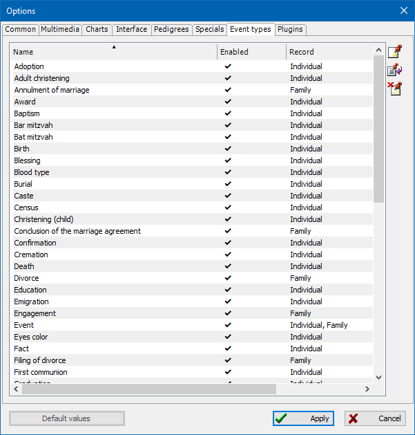
Plugins
This is a list of the plugins that are in use by GEDKeeper.
This is for reference only.
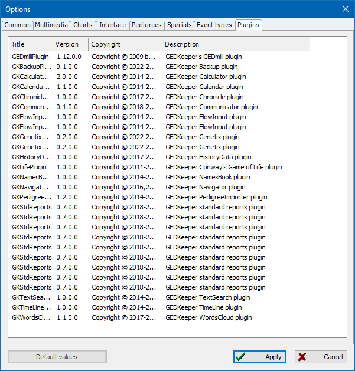